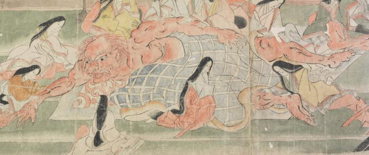

赤い鬼。体長は常人の倍以上である。頭頂部は禿げ、後頭部から髪を垂らしている。目と鼻が大きく、開いた口の上顎に牙が生えている。胴体、腕、脚は筋肉が付き、毛が生えている。手足の指に鋭い爪が生えている。横になって、青い布団をかぶり、女房姿の女性に腕と脚をさすらせている。
著作者：坂本弥一郎徳定／出典：親書誌：U426_nichibunken_0080：伊吹山酒呑童子絵巻；イブキヤマシュテンドウジエマキ／日付：2007／資源識別子：U426_nichibunken_0080_0010_0000
Copyright (c)2010- International Research Center for Japanese Studies, Kyoto, Japan. All rights reserved.